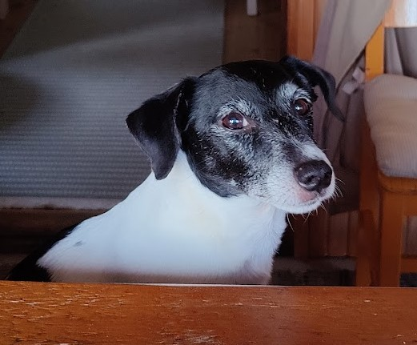

Pongo
Pongo on rotuaan hyvin edustava energinen koira. Jackrusselinterrierien alkuperäinen käyttötarkoitus
on ollut talleilla/tiloilla pienriistan metsästys, joten pelkästä seurakoirasta ei ole kyse, vaan
energiaa riittää loputtomasti. Pongo on jo 11-vuotias herra ja vaikka energiataso on ehkä hieman
laskenut, innokkuus on silti edelleen samanlaista kuin se oli pentuna. Kun Pongo pääsee leikkimään
frisbeellä, ei leikki lopu ennen kuin sen estää. Ensimmäisessä kuvassa Pongo kolmevuotiaana.
Vaikka Pongo onkin energistä rotua, on siitä vuosien mittaa tullut myös melkoinen sylikoira, joka
hyppää viereen heti, kun joku vain istuu alas ja ilmaisee tyytymättömyytensä, jos joutuu siirtymään.
Lenkin tai leikkihetken jälkeen onkin iän myötä tullut isompi tarve lepohetkeen. Alemmassa kuvassa
Pongo on päässyt tupapöydän ääreen istumaan. Kuonon värityksestä näkee jo, että ikää on kertynyt.
